← 返回阅读库 · 原论文目录
论文讲解阅读文档 · 内容生成 · v005
Multimodal Unsupervised Image-to-Image Translation[1804.04732]
视频时长 00:12:49；讲解文字 6,531 字符；提取讲解画面 61 张。按视频原顺序阅读，每段文字保留时间戳。
文字来自整段视频的自动语音转写，按自然停顿分段，并与 PPT / 论文页面 / 演示画面对齐。未将讲解压缩为摘要；术语、数字和口述公式请结合画面及原论文核对。 阅读稿已校正规范部分明确术语误识别；原始逐字稿和每处修改记录另行保留。
讲解画面为源视频截图（640×360），不是可编辑 PPT 文件。全片按每秒 2 帧扫描内容变化，逐步展开页保留；连续动画保留代表画面。清晰度受源视频限制。
下载完整资料包 · 含离线 HTML、PDF、Word、全部 PPT 画面和字幕。
原论文与材料
Multimodal Unsupervised Image-to-Image Translation · 下载完整 PDF（23 页）
按时间阅读
00:00:00–00:00:15 · 画面 001
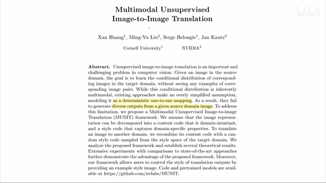
00:00:00–00:00:15 · 画面 001大家好啊，今天我们来快速说一篇论文，Multimodal Unsupervised Image-to-Image Translation。这篇呢是这个 Unit 的这个后续，M-Unit。那么既然是后续了，那肯定是解决了一些前面的问题啊。我们首先来看这个问题在哪里。那么包括 CycleGAN 还有我们之前介绍的这个 Unit，他们都有一个共同的问题啊，就是他们建立在一个假设上，就是我的一个 Source Domain 到一个 Target Domain，他们是一对一的这么一个关系。
00:00:15–00:00:28 · 画面 002
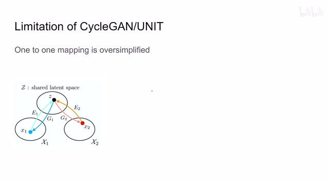
00:00:15–00:00:28 · 画面 002就像这个图里显示的一样啊，但是在实际情况中呢，特别是我们不知道这个两个 domain 他们这个图像的对应关系的时候呢，我们并不确定说这种 translation 的这种关系又是 1 对 1 的啊。那比如说这种情况，我的 source domain 只有一只小猫逼，而对面有六只啊，你这不是在难为我吗？那为了解决这个问题呢，本文呢就提出了做这个 representation disentanglement，就是说我的这一个图像它的这个 encoder 过来之后，我提出两种 representation 来。
00:00:28–00:00:30 · 画面 003
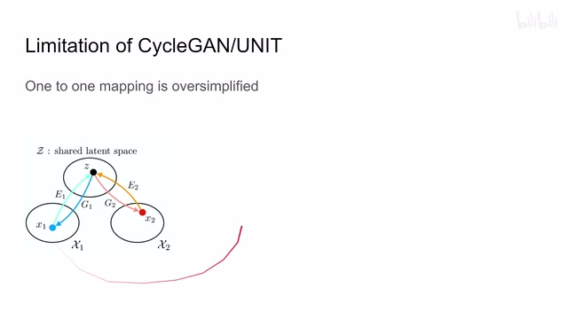
00:00:28–00:00:30 · 画面 00300:00:30–00:00:40 · 画面 004
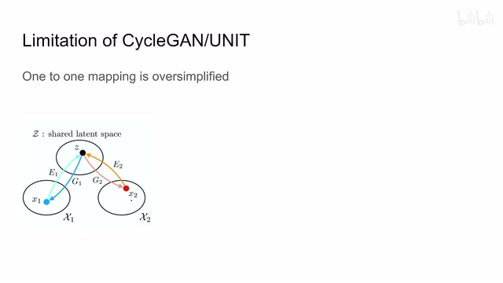
00:00:30–00:00:40 · 画面 00400:00:40–00:00:45 · 画面 005
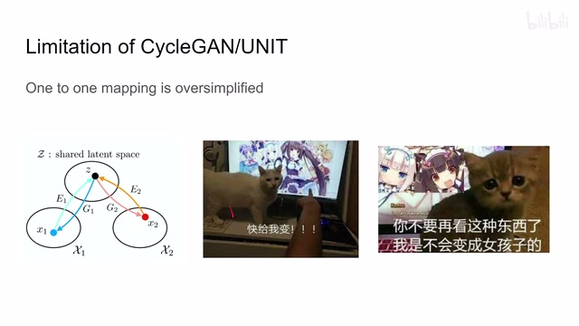
00:00:40–00:00:45 · 画面 00500:00:45–00:01:21 · 画面 006
00:00:45–00:01:21 · 画面 006一种呢是 domain invariant，它就像我们之前这个 unit 一样，这些呢就是在不同 domain 里面同一个样本，它们都对应的一个 feature。我们希望这个 feature 是用来描述这些高级的这个语义的信息，这个叫做 domain invariant。那还有一种呢就是 domain specific，就是在这里这个 s 它呢就是使在这个 domain 里面增加了一些各种的属性。那就以这个例子来说，同样都是猫啊，大家都是一个大头兆。
00:01:21–00:01:22 · 画面 007
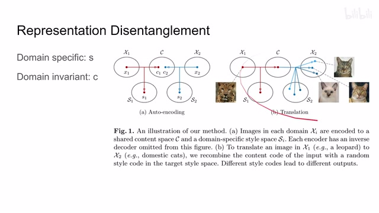
00:01:21–00:01:22 · 画面 00700:01:22–00:01:53 · 画面 008
00:01:22–00:01:53 · 画面 008那么这个 representation 这个 C 是这个 domain invariant，就是定调整个这张照片就是这么一个大头照。但是 domain specific 就决定了你这个猫它可能是不同样子的。你看这是不同种类的猫，包括背景都不一样等等对吧？这些只跟这个 domain 相关的属性我们叫它这个 domain specific 这些 representation。
那么这种区分带来的好处是显而易见的,你用相同的这个 domain invariant 这么一个 feature,remotation,加上不同的这个 domain specifics,这些 feature,这些不同的点,那就可以根据一张图像生成不同的风格的另一个 domain 的这个图像。那么这个呢就是本文的核心的思想,那下面我们来看具体的框架。
00:01:53–00:01:54 · 画面 009
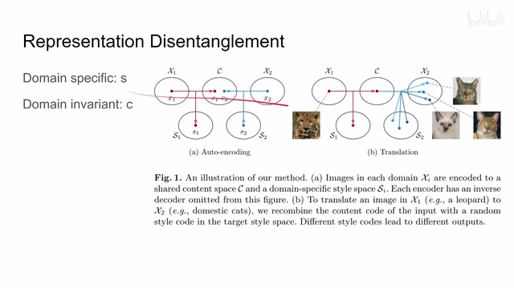
00:01:53–00:01:54 · 画面 00900:01:54–00:02:01 · 画面 010
00:01:54–00:02:01 · 画面 01000:02:01–00:02:02 · 画面 011
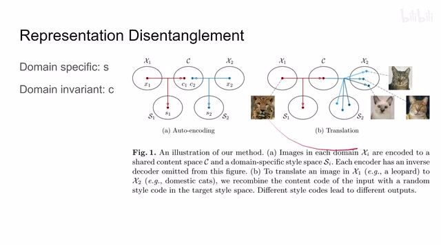
00:02:01–00:02:02 · 画面 01100:02:02–00:02:04 · 画面 012
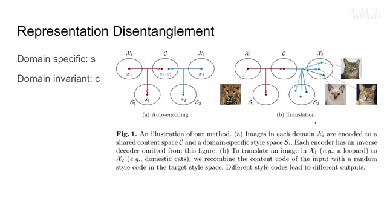
00:02:02–00:02:04 · 画面 01200:02:04–00:02:21 · 画面 013
00:02:04–00:02:21 · 画面 013那首先既然 encoder decoder 结构还是来都来了对吧，做一个 reconstruction 吧。然后因为我们这里的 feature 是 disentanglement，一个是 specific 一个是 invariant，所以呢我的这个 decoder 也是拿到这两个 representation 之后才能输出一张图像。这个呢就是标准的这个 reconstruction 的设计。那么再往下呢，作者做的另一个设计叫做这个 latent reconstruction，就是说呢，我的训练从这个 latent representation 开始。
00:02:21–00:02:23 · 画面 014
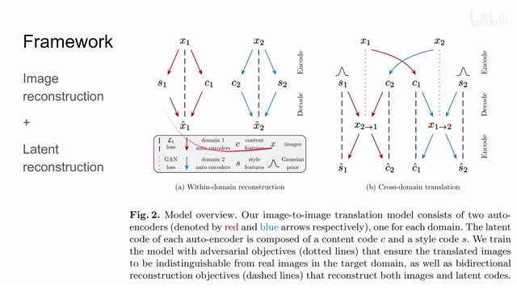
00:02:21–00:02:23 · 画面 01400:02:23–00:03:03 · 画面 015
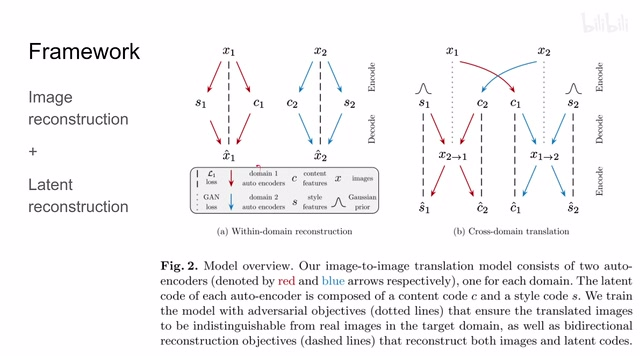
00:02:23–00:03:03 · 画面 015比如说这个 domain invariant 这个 representation，我们当然假设它是这个 gaussian distribution，那么我再加上另一个真实图像过来的这个 domain specific 这个 feature，把它们结合起来生成一张新的图像。生成一张新的图像之后呢，我再送回到我们这个 encoder 里面，让他重新去提这个 domain invariance 和这个 domain specific 这样一个 feature。那么经过这样一个从 representation 到我们的这个 image 再到这个 representation 这么一个过程呢，他们这个 representation 应该是保持不变的。这些 latent code 是保持不变的。那么这个呢叫做 latent reconstruction。那么本文的 loss 呢，主要就是基于这两种模式来构建的。我们继续来看。
00:03:03–00:03:05 · 画面 016
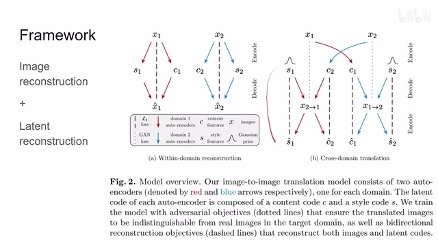
00:03:03–00:03:05 · 画面 01600:03:05–00:03:06 · 画面 017
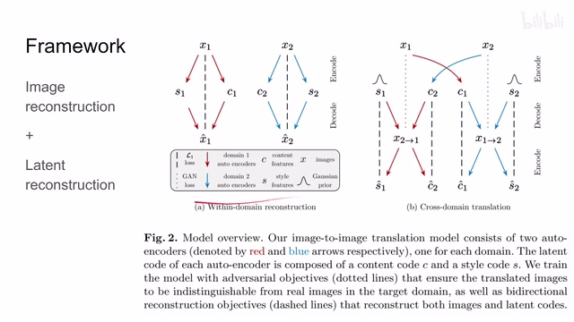
00:03:05–00:03:06 · 画面 01700:03:06–00:03:09 · 画面 018
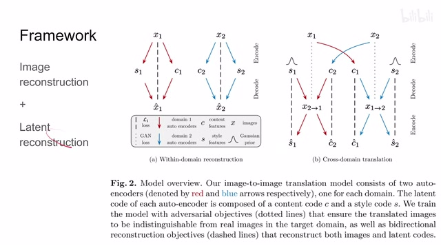
00:03:06–00:03:09 · 画面 01800:03:09–00:03:12 · 画面 019
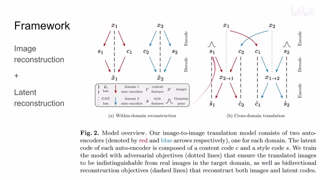
00:03:09–00:03:12 · 画面 01900:03:12–00:03:47 · 画面 020
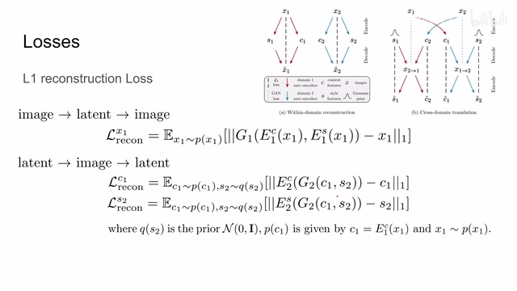
00:03:12–00:03:47 · 画面 020这里的 Loss 全部用了 L1，因为在 pix2pix 那篇里面我们知道 L1 能够帮我们带来更加犀利的更加锐利的图像。那么 Reconstruction 非常简单，只不过与之前不同的就是我们有两个 Representation 都要送到 Decoder 里面，然后跟 Ground Truth 做比较。那么这个 latent reconstruction 也是，你看我们先根据这些 representation 这些 latent code 把我们的这个图像生成出来，然后送回到两个 encoder 里面提 domain invariant feature 和这个 domain specific feature，这个也是很直接的设计。那么当然既然我们这是一个 GAN，我们还需要把这个 discriminator 的 loss 对吧加上。那这里就没有把这个 reconstruction 的 image 送进来了。
00:03:47–00:04:14 · 画面 021
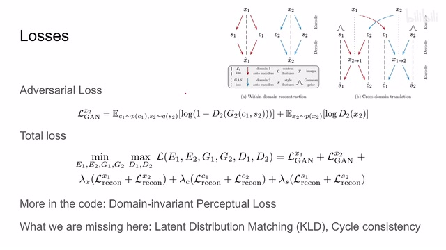
00:03:47–00:04:14 · 画面 021直接用的是 translated image，然后呢作为这个 negative sample，然后使用它呢来传递梯度。那么显然最后的这个所有的 loss 加总起来嘛，那么这个呢是本文最基础的这个 loss 版本。当然你如果去看它的代码呢，你会发现它呢还用了一个 domain invariant perceptual loss，这是个什么东西呢？我们马上讲一下。
00:04:14–00:04:15 · 画面 022
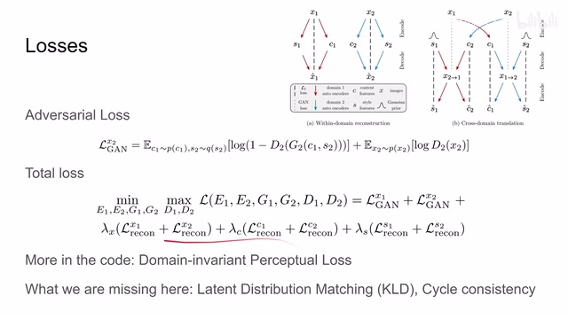
00:04:14–00:04:15 · 画面 02200:04:15–00:04:35 · 画面 023
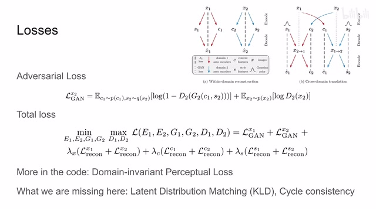
00:04:15–00:04:35 · 画面 023然后呢同时对比于我们之前的这个 unit，它少了这个 latent distribution matching，也就是 KL divergence，让我们的 encoder 的输出尽量接近 gaussian distribution，少了这一项。同时呢它少了这个 cycle consistency，其实在它的代码里并没少，这只是一个选项而已。那么下面我们就继续来看。
00:04:35–00:04:37 · 画面 024
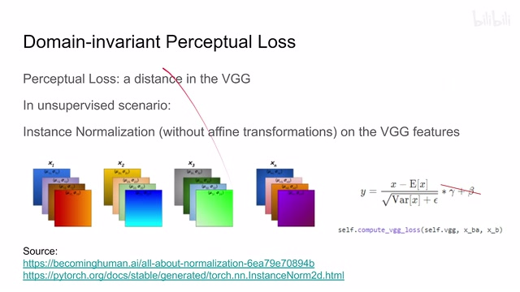
00:04:35–00:04:37 · 画面 024首先是这个 domain invariant perceptual loss 你就可以理解为这是一个额外的 discriminator 来帮助我们获得更好的这个图像的性能那么区别于我们自己训练的这个 discriminator 呢它呢用的是我们 VGG 网络里面提的 feature 用我们 translated 的这个图像它的 feature 和我们原始图像的这个 feature 它们的这个距离来衡量我们生成图像的质量的好坏那显然这个图像的质量越高它更加应该接近真实图像
00:04:37–00:04:47 · 画面 025
00:04:37–00:04:47 · 画面 02500:04:47–00:05:28 · 画面 026
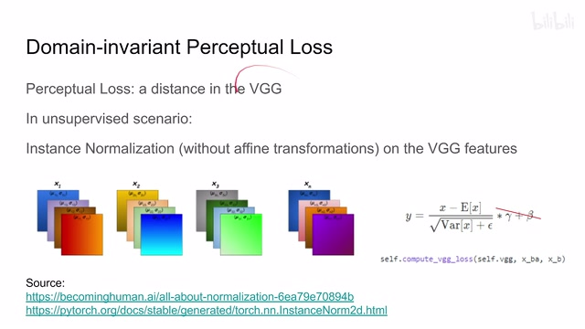
00:04:47–00:05:28 · 画面 026对吧？但是呢这个时候有朋友问了，你这个不是一个 unsupervised 的情况吗？你怎么知道这一个图像它这个 translation 过去之后它的 ground truth 是什么呢？对吧，我们不知道。所以呢这里呢作者用的是 translated 图像和他输入的原始图像这个距离来进行比较。那么因为这两个图像分属于不同的斗媒嘛，所以呢这个 feature 如果你直接拿来用就会差很远。那这里呢作者对此做了调整。
就是加了一个 instance normalization，看这个图就是我们的 feature 的每一个 channel 做这个 spatial wise 的就是空间尺度上的这个 normalization，具体的公式呢就是这个。那么同时呢没有做这个 affine transformation，就是不学习后面这两个参数，就是直接统计均值和标准差。那么这样做之后呢，作者希望说我们就把这个 domain 之间的这个 gap 给它抹平了。你可以看到他计算这个 loss 的时候呢，就是 translated image 和这个原始的输入图像。
00:05:28–00:05:39 · 画面 027
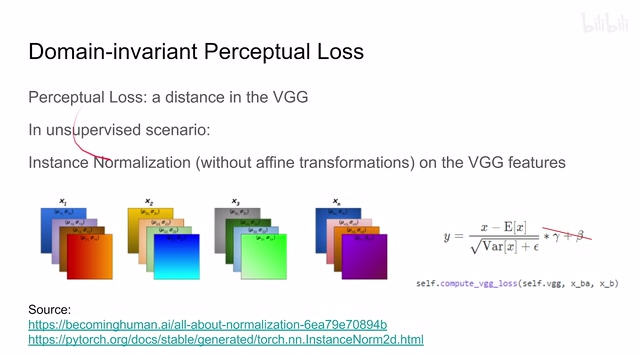
00:05:28–00:05:39 · 画面 02700:05:39–00:05:40 · 画面 028
00:05:39–00:05:40 · 画面 02800:05:40–00:05:53 · 画面 029
00:05:40–00:05:53 · 画面 02900:05:53–00:05:58 · 画面 030
00:05:53–00:05:58 · 画面 03000:05:58–00:06:51 · 画面 031
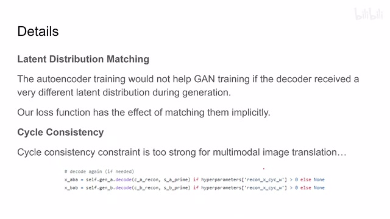
00:05:58–00:06:51 · 画面 031那么再回到我们之前说的缺失的几个 loss 项的问题，比如说第一个 latent distribution matching，作者这里 argue，我们的 decoder 如果收到一个非常不同的 latent distribution，那么我们 KLD loss 可能并不能帮助我们的干做训练，所以他就直接拿去了。同时作者说他们设计能够非显示的去 match distribution那么另一个关于 cycle consistency 作者在论文里说啊这种直接的加了这种限制呢可能对这种 multimodal 的这个 image translation 太过于严苛了但你如果看他代码哎呀真行啊其实并不是真香啊他在后面的描述中呢又说如果我们使用同样的这个 domain specific 这个 feature 再去做一整个 cycle 那么在有些数据集上它是能够提高性能的所以这个东西呢用不用呢完全看数据集你也多试几次
00:06:51–00:07:23 · 画面 032
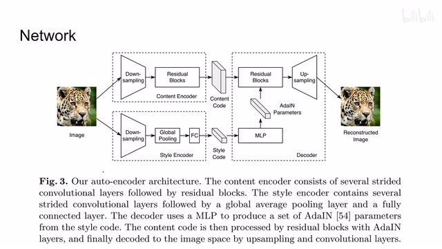
00:06:51–00:07:23 · 画面 032那来看到作者提出了这个网络既然我们要做这个 representation disentanglement那肯定这个图像进来它就有两个分支一个呢过这个 residual blocks它呢就是提正经的这个语义上的这个 feature那另一种呢过这个 style code就是你可以看到这里呢几层 convolution 过去之后呢过了这个 global pooling然后呢送到一个全连层这样子呢提出来这个 style code那么这个 style code 呢过了一个 mlp通过这个 adaptive instance normalization
来影响我们 decoder 这个参数那具体怎么影响呢
00:07:23–00:07:32 · 画面 033
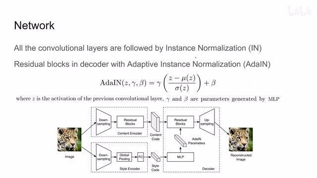
00:07:23–00:07:32 · 画面 033我们来看一下首先所有的卷积层都是首先所有的卷积层后面都加了一个 instance normalization那么对于 residual blocks 来说呢
00:07:32–00:07:37 · 画面 034
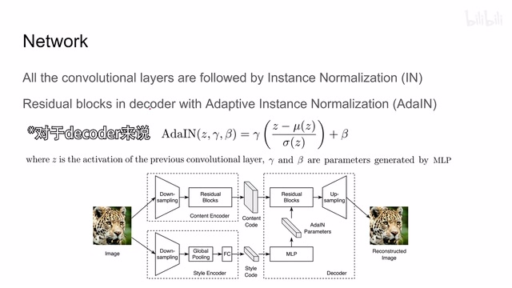
00:07:32–00:07:37 · 画面 034它的这个 instance normalization是这个 adaptive
00:07:37–00:07:58 · 画面 035
00:07:37–00:07:58 · 画面 035这里呢这个 z 是我们上一层这个 convolution residual block它过来的这个输出那么这个 mu 和 sigma 一个就是均值一个就是标准差这个 instance normalization 没问题那这里呢加了这个 projection就是 gamma 和 beta而这个 gamma 和 beta 呢就是我们这里提到这个 MLP它预测出来的结果你就可以把它理解成这是一个带有 affine transformation 的这个 instance normalization，但是呢，这个 affine transformation 这个 beta 和 gamma 的这个估计呢，不是通过 z 来估计的，而是通过这个 stylecode 的这个 mlp 来估计的。那这个呢，是它的 decoder 实现上的一个 trick。那最后呢，我们就开始评估这个网络吧
00:07:58–00:07:59 · 画面 036
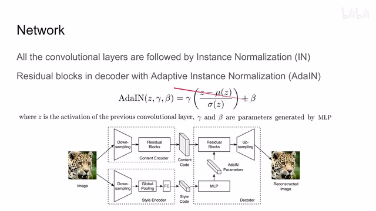
00:07:58–00:07:59 · 画面 03600:07:59–00:08:14 · 画面 037
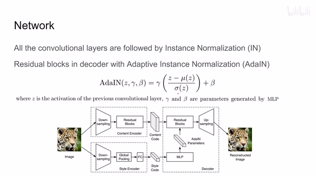
00:07:59–00:08:14 · 画面 03700:08:14–00:08:23 · 画面 038
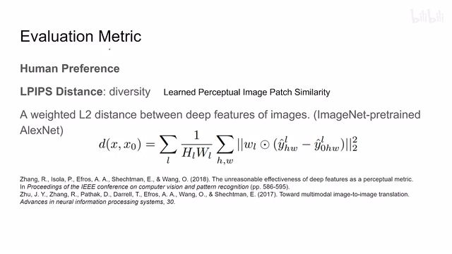
00:08:14–00:08:23 · 画面 038首先当然我们要介绍一下评估的标准第一个最简单的你抓过一个人来问问你觉得哪个图像好对不对那么第二个指标作者使用了 LPIPSLearned perceptual image patch similarity 它是一个衡量 image diversity 的就是我生成图像的多样性的这么一个指标
00:08:23–00:08:24 · 画面 039
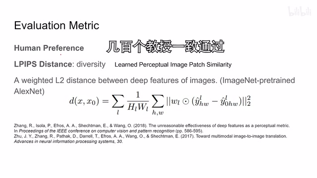
00:08:23–00:08:24 · 画面 03900:08:24–00:08:36 · 画面 040
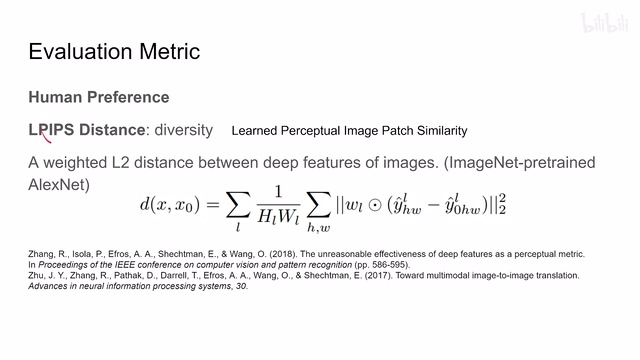
00:08:24–00:08:36 · 画面 04000:08:36–00:08:37 · 画面 041
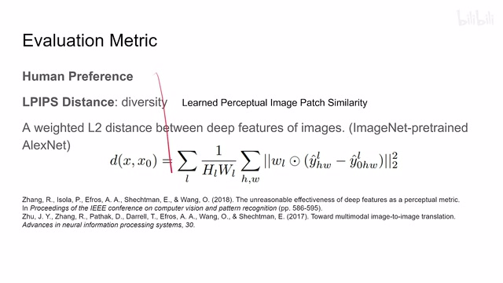
00:08:36–00:08:37 · 画面 041具体的你可以看这两篇论文本质上来说它是一个带权重 L2 distance 是上层图像和真实图像他们在一个 Pretrain 好的这个 Encoder 里面拿出来的 feature 这个 Pretrain 好的 Encoder 就是用 ImageNet pretrain 的 AlexNet 而这个权重是通过学习得到的具体的学习方法你可以看这篇论文我们就不详细的讨论它那么拿到这个举例之后我们应该怎么使用它
00:08:37–00:08:48 · 画面 042
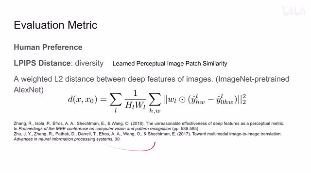
00:08:37–00:08:48 · 画面 04200:08:48–00:08:49 · 画面 043
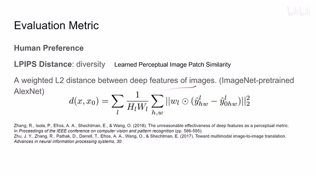
00:08:48–00:08:49 · 画面 04300:08:49–00:08:51 · 画面 044
00:08:49–00:08:51 · 画面 04400:08:51–00:09:53 · 画面 045
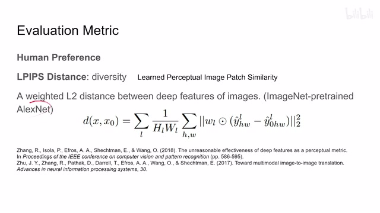
00:08:51–00:09:53 · 画面 045我们的 translation 既然是可以一对多的那么每次我拿出一个样本来然后根据这个样本生成很多个风格不同的这些图像然后计算我们每一个生成的图像到原始图像他们的 LPIPS 那么每一个 translation 我们都会有这么一个 distance 值最后我们计算对于同一个 sample 来说不同的 translation 这些所有的距离它们的 variance 也就是方差你想如果我们生成的图像很多样那么这个 variance 自然就会比较大但是它又不能过分的大它如果太大有可能是意味着我们生成的图像超过我们的 classifier 理解常识它可能是一个不真实的图像那么所以这个指标只是作为一个 diversity 的这么一个指标
那么有没有方法能够全面的衡量我们的 diversity 还有生成图样的这个 quality 呢当然是有的这个时候呢我们就引入这个 inception score 它呢就是为了同时衡量这个图像的 diversity 和这个 quality 而设计的那么同时为了应对这个 multimodal 的这个情况呢作者呢对它做了一定改进就是这个 conditional 那么我们下面具体来看首先是这个 inception score 它的核心呢是让我们用这个 inception network 拿到我们这个 translated image
00:09:53–00:10:21 · 画面 046
00:09:53–00:10:21 · 画面 046然后呢，输出一个 label。那显然，如果你的这个图像的质量越高，那么我们的网络就越确定你这是一张接近真实的图像。所以呢，我的网络会越确定这个值。那么整体来说，这个 distribution 它的这个 entropy 它的这个熵就会变得很低。我们希望它变得低。那么同时，从一个 diversity 的角度来看，我们希望我们的这个 image translation 生成的这个图像要尽量覆盖各种各样的图像。
00:10:21–00:11:04 · 画面 047
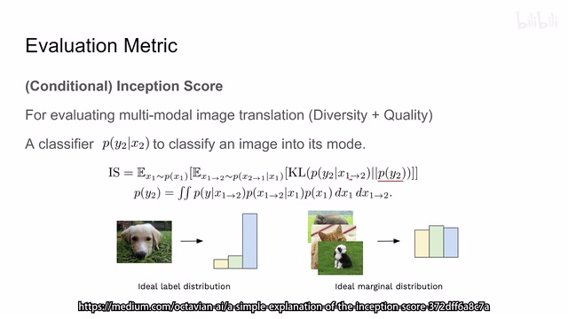
00:10:21–00:11:04 · 画面 047所以，我们如果从这个 distribution 出发去计算它的 marginal distribution，就是计算这个东西。同样还是因为我们希望生成的图像它是尽量多种多样的，那么这个 distribution 应该尽量接近 uniform。所以它的 entropy 它的熵是应该尽量的高的。那么一个希望有高熵，一个希望有低熵，把它们统合起来算一个 KL divergence。这两个值越不一样，我们越开心。这个就是一个标准的 Inception Score。
00:11:04–00:11:11 · 画面 048
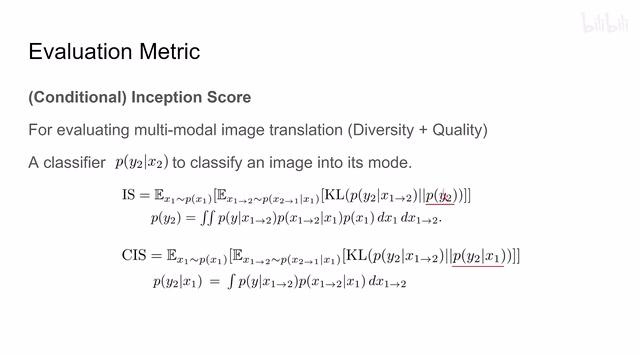
00:11:04–00:11:11 · 画面 04800:11:11–00:11:12 · 画面 049
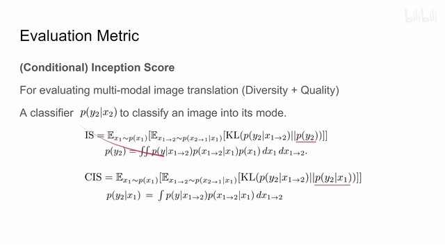
00:11:11–00:11:12 · 画面 04900:11:12–00:11:45 · 画面 050
00:11:12–00:11:45 · 画面 050那你问我这个玩意怎么计算对吧你有了左边这个东西你按照各自的这个 label 加起来那就可以得到这个东西了那这个呢是 inception score 那在本文的情况下呢作者加了一个 condition 也就是他使用了一个额外的 classifier 去处理我们输入图像的这个 condition 你可以想这个图像的 translation 它本质上的 condition 就是我们的输入图像这个 source domain 的这张图像那这里呢就是把这个没有 condition 的这个 distribution 换成了一个一个 condition distribution
下面你要问了这个玩意怎么实现对吧我们是不是要还要再构建一个 classifier 去训练其实不是你如果看到代码发现就是前面 prediction 按照我们输入的图像按照我们输出的 label 给它加起来就可以了就相当于把统计做得更细一点把我们的输入的 sample 也统计上非常简单的一个实现和他论文里讲的不是一个东西好的那么以上就是本文引入的评价手段
00:11:45–00:11:46 · 画面 051
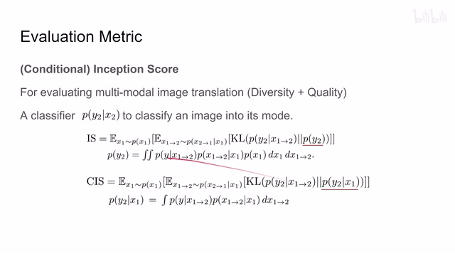
00:11:45–00:11:46 · 画面 05100:11:46–00:11:48 · 画面 052
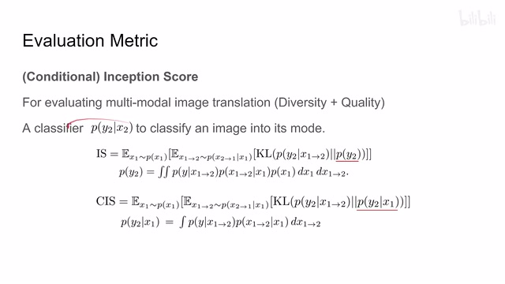
00:11:46–00:11:48 · 画面 05200:11:48–00:12:04 · 画面 053
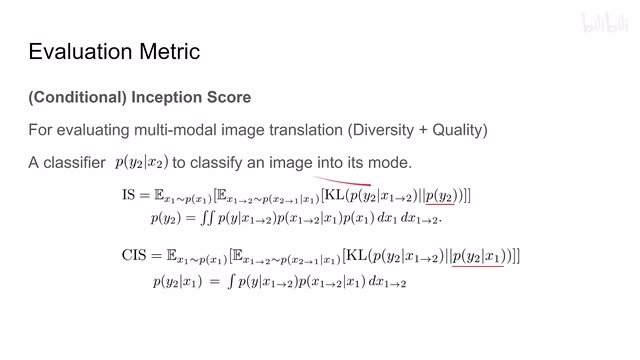
00:11:48–00:12:04 · 画面 05300:12:04–00:12:05 · 画面 054
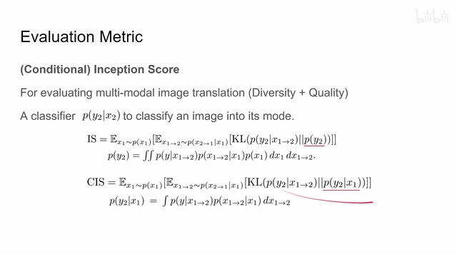
00:12:04–00:12:05 · 画面 05400:12:05–00:12:12 · 画面 055
00:12:05–00:12:12 · 画面 05500:12:12–00:12:21 · 画面 056
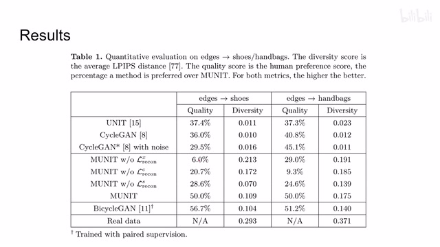
00:12:12–00:12:21 · 画面 056我们直接来看作者汇报的一些结果啊这个从这个涂鸦的这个边缘到这个鞋子还有到这个手提包这两个数据集你可以看到本文的方法同时呢各种 ablation 就是不同的这个 loss 去了之后对于我们这个性能的影响那么另外呢这个 inception score 对吧这对比一下那本文的方法呢得分是非常高的那么以上呢就是我对这篇论文的一个快速的介绍
00:12:21–00:12:22 · 画面 057
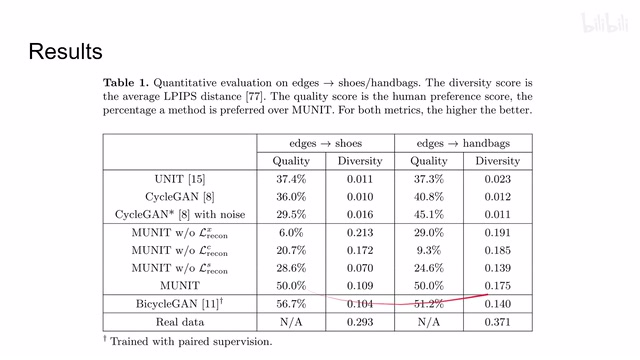
00:12:21–00:12:22 · 画面 05700:12:22–00:12:26 · 画面 058
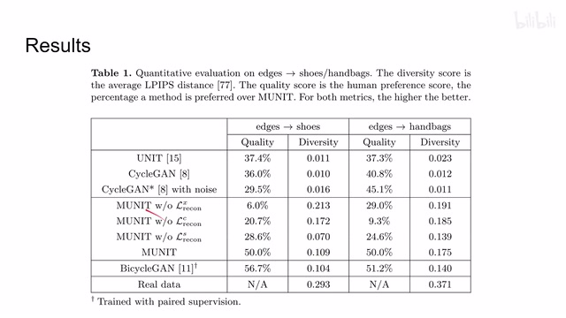
00:12:22–00:12:26 · 画面 05800:12:26–00:12:29 · 画面 059
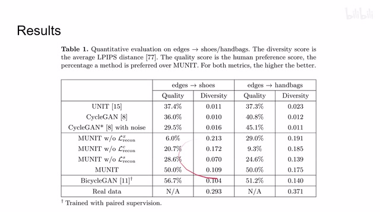
00:12:26–00:12:29 · 画面 05900:12:29–00:12:49 · 画面 060
00:12:29–00:12:49 · 画面 060那么在这个论文的最后的附录里面呢还有作者基于前人的工作对于一些这个模型收敛性的证明那感兴趣的朋友呢可以去阅读一下那么感谢您的收看再见
00:12:49–00:12:49 · 画面 061
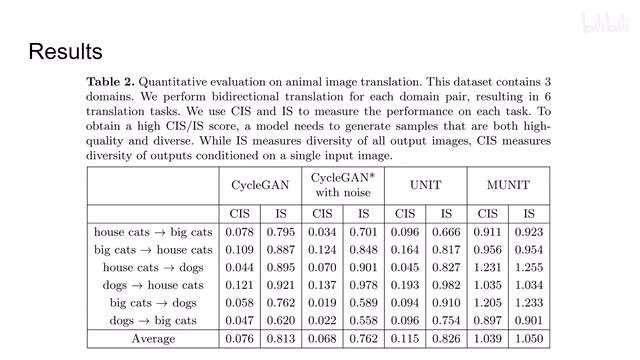
00:12:49–00:12:49 · 画面 061转写与来源说明 · 18 个自动复核提示
保留 64 个原始语音片段，18 个片段触发自动复核提示。提示仅用于定位可能的术语、重复或识别问题，不等于已确认错误。
讲解画面为源视频截图（640×360），不是可编辑 PPT 文件。全片按每秒 2 帧扫描内容变化，逐步展开页保留；连续动画保留代表画面。清晰度受源视频限制。
原视频：paper/合集_2026-10-16_内容生成/[论文简析]Multimodal Unsupervised Image-to-Image Translation[1804.04732].mp4
SHA-256：f0a75601dfa05ecb0049e16cec0b670aa22ae7c3aa0f96123733ce55c9a6d460
既然我们要做这个 representation disentanglement
通过这个 adaptive instance normalization
来影响我们 decoder 这个参数
那具体怎么影响呢
我们来看一下
首先所有的卷积层都是
首先所有的卷积层后面
都加了一个 instance normalization
那么对于 residual blocks 来说呢
它的这个 instance normalization
是这个 adaptive
这里呢这个 z 是我们上一层
这个 convolution residual block
它过来的这个输出
那么这个 mu 和 sigma 一个就是均值
一个就是标准差
这个 instance normalization 没问题
加了这个 projection
全文按视频语音与画面制作。原论文可从上方链接下载；完整资料包保留全文、原始逐字稿、字幕和校对记录。